Discography as sideman
-
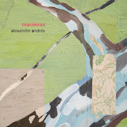
"Macieiras" 2017
Artist: Alexandre Andrés
-

"Suite Onírica” 2017"
Artist: Rafael Martini
-
"Viamundo" 2015
Artist: Thiago Delegado
-
"Olha bem as montanha” 2015
Artist: Alexandre Andrés
-
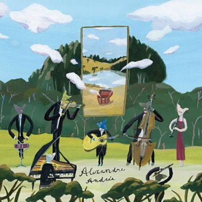
DVD "Macaxeira Fields” 2014
Artist: Alexandre Andrés
-
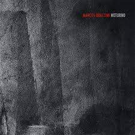
"Noturno” 2014
Artist: Marcos Braccini
-
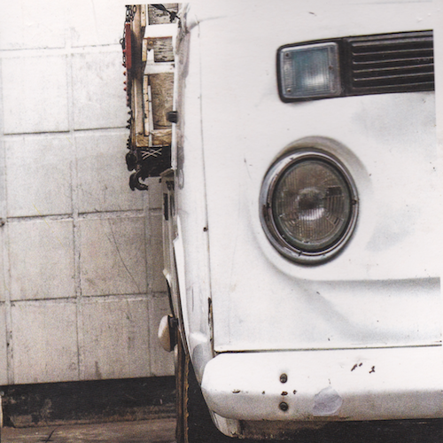
"Trio” 2014
Artist: Maurício Ribeiro
-
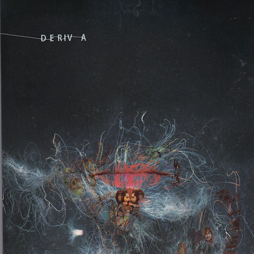
"Deriva” 2013
Artist: Kristoff Silva
-
"Pro fim do inverno” 2013
Artist: Cristiano Cunha
-
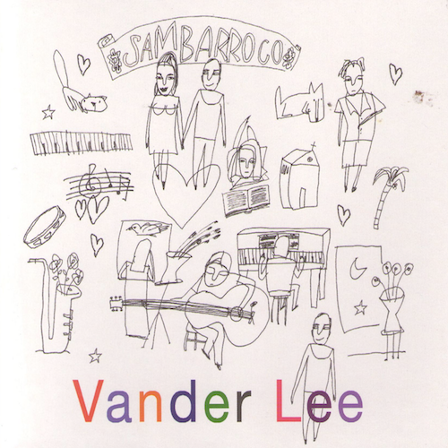
"Sambarroco” 2011
Artist: Vander Lee
-
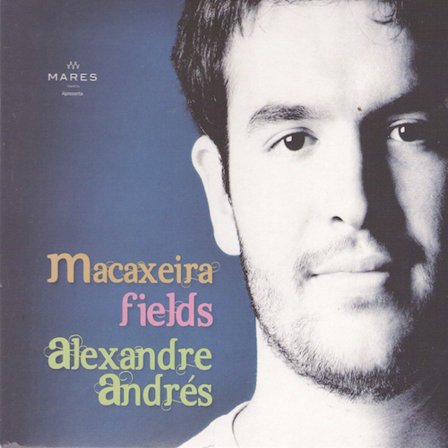
"Macaxeira fields" 2012
Artist: Alexandre Andrés
-
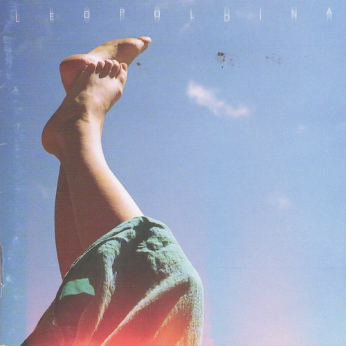
"Leopoldina" 2010
Artist: Leopoldina
-
"Misturada Orquestra" 2011
Artist: Misturada Orquestra
-
"Só" 2012
Artist: Antonio Loureiro
-
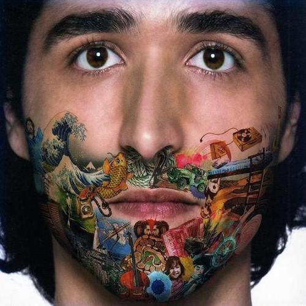
"Em pé no porto" 2007
Artist: Kristoff Silva
-
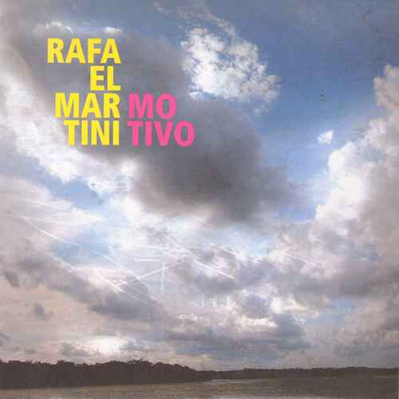
"Motivo" 2011
Artist: Rafael Martini
-
DVD "Em pé no porto Ao vivo" 2008
Artist: kristoff Silva
-

"Serra do Curral" 2010
Artist: Thiago Delegado
-
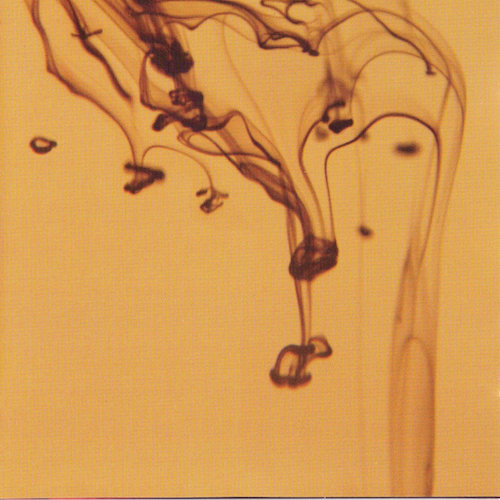
"Quase em silêncio" 2008
Artist: Rafael Macedo
-
"Tempo do desenredo" 2007
Artist: Sidney Porto
-
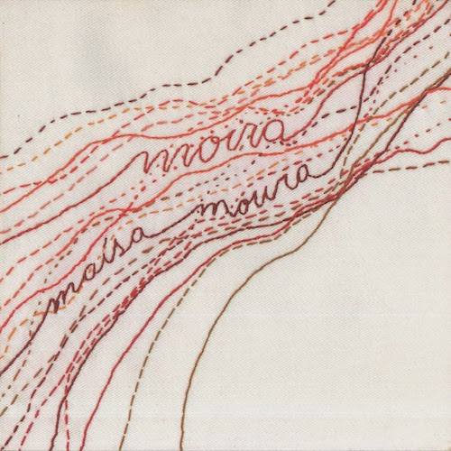
"Moira" 2007
Artist: Maísa Moura
-
"BDMG Instrumental" 2007
Artist: André Rocha
-
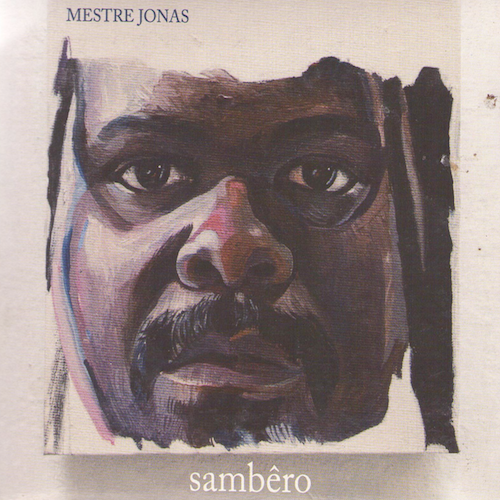
"Sambêro" 2008
Artist: Mestre Jonas
-
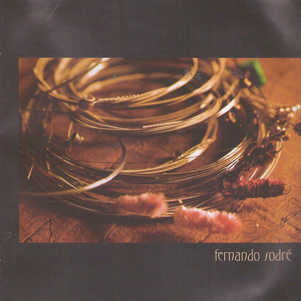
"Fernando Sodré" 2005
Artist: Fernando Sodré
-
"Ana" 2007
Artist: Titane